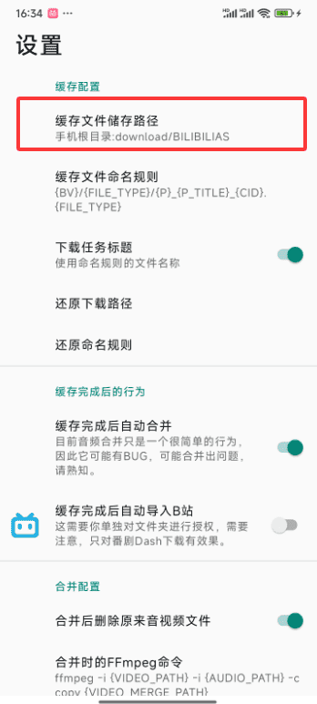
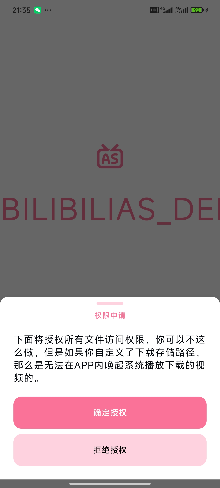
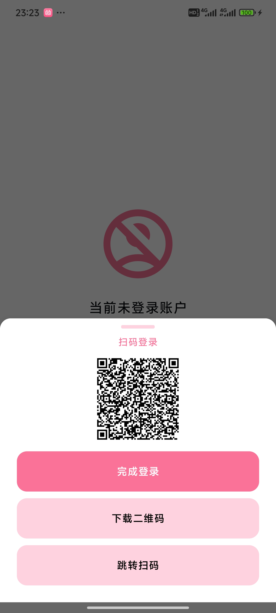

BILIBILIAS 嵌进我的 B 站离线缓存全流程
每周要把 B 站追番和教程视频离线存进平板、再同步网盘备份，以前三步手动复制，现在一条链走完。
我每周要做的这件事
我有一个固定节奏：每周日晚上把这一周在 B 站攒下来的追番更新、教程干货、UP 主新视频全部离线存一遍。目的很简单——工作日通勤地铁上没有稳定信号，平板离线看完再连回 B 站 App 追番表同步进度；同时手机里的视频还要自动备份到网盘，省得半年后换手机丢素材。
以前这条链要手动操作三次：浏览器打开 B 站网页版用插件下载 → 下载好的文件手动剪切到平板指定目录 → 再把同一份文件手动上传网盘客户端。文件命名又乱，有时候 B 站插件下的是一串 BV 号加随机后缀，回头找哪个视频是什么还要再打开文件管理器。我试过换好几个下载工具，要么得登录又丢 Cookie、要么格式只能一种，始终没有一个工具能直接在手机上把整条链的开头接住。
后来把 BILIBILIAS官网 放进这条链的第一环——它的官方下载装起来不需要任何配置，整条线直接串了起来——B 站 App 分享出去，BILIBILIAS 自动接住解析缓存，默认路径让系统相册和网盘客户端都能直接扫到，中间不再有人工参与。
新流程：从分享到备份一条线
整套流程现在是这样的：
B 站 App 点「分享」 → 选中 BILIBILIAS → 自动解析 + 选清晰度 → 缓存完成 → 网盘客户端检测到新文件自动上传 → 平板定期从网盘同步BILIBILIAS 在这条链上扮演的角色很具体——它是唯一在手机端把 B 站视频 URL 解析成可缓存文件的环节，同时它的默认存储路径选得巧：Download/BILIBILIAS 放在系统公开的下载目录里，不需要额外高权限。这意味着下游的两个环节——系统相册自动扫描、网盘客户端的文件夹同步任务——都能完全自动地工作，文件一落盘就被各自接住。

上下游配合的几个衔接点我调了两周才定好：
- B 站 App → BILIBILIAS：用 B 站自带的分享菜单直接跳过去，省了复制链接再贴进解析框这一步。分享菜单里选「更多」，会列出手机上所有能接收分享的应用，BILIBILIAS 注册了这个接收入口，一点就进。
- BILIBILIAS → 网盘客户端：缓存路径固定在
Download/BILIBILIAS，网盘客户端（我用的是夸克，但任何支持文件夹同步的都行）在设置里开启这个目录的自动同步。这样 BILIBILIAS 缓存完一个视频，网盘客户端后台就自动开始上传，不需要我手动选文件。 - 网盘客户端 → 平板：平板那边同一个网盘账号，设置一个相反方向的同步——只要
BILIBILIAS文件夹有新文件就自动拉下来。整条链下来我什么都不用点，最多在 B 站 App 里多按一次「分享」。
实操里最容易断链的两个地方
这条链跑了两个月，真正常出问题的就两个环节，都不是 BILIBILIAS 本身的 bug，而是 Android 版本权限和登录状态的维护——这两个地方细节没处理好会让整条链静默停摆。
第一个：Android 13 及以上的高权限提示。
我最早在 Android 11 的旧手机上跑这条链没问题，换了 Android 14 的新手机后第一次启动 BILIBILIAS 就弹了个高权限请求框。当时没细看直接点了拒绝——结果 BILIBILIAS 还能跑，但我想自定义存储路径到 SD 卡就不行了。后来翻 BILIBILIAS文档 才搞明白：拒绝高权限不会让 APP 崩溃，只是锁死了自定义路径；默认路径 Download/BILIBILIAS 不需要高权限就能正常读写。
所以这条链在 Android 13+ 上的正确姿势反而是保持默认路径不动，不要碰高权限请求。文档里也明确推荐了这一点——默认路径同时满足「APP 能自由读写」「系统相册能扫描到」「文件管理器能直接访问」三个条件，是最省事的选择。如果不小心点了拒绝又想开启自定义路径，得进系统设置 → 应用管理 → BILIBILIAS → 权限管理里手动打开，重新打开 APP 才生效。

第二个：登录状态的 Cookie 有效期。
BILIBILIAS 的基础功能在 2.1.5 以后不登录也能用，但不登录最高画质固定在 480P。我用的是大会员账号，为了 4K 缓存必须登录。扫码登录的过程本身不难——BILIBILIAS 生成二维码 → B 站 App 扫码 → 在 B 站确认 → 回到 BILIBILIAS 点完成登录。问题在于 Cookie 会过期，过期了不影响基础解析，但登录账号锁定的高分辨率选项会悄悄失效，缓存下来的视频画质突然变低而我自己不知道。
解决办法很土但管用：每周日跑这条链之前先扫一眼 BILIBILIAS 首页头像还在不在，不在就用 B 站 App 重新扫一遍码。整个流程不超过 30 秒，但能避免一整批缓存视频画质不合格的返工。BILIBILIAS 文档里专门提到了二维码有效期——过期了点刷新重新生成就行，这点细节也让重新登录的操作成本很低。
扫码登录完整链路就五步：
- 打开 BILIBILIAS 切到「我的」页面点登录
- 保存生成的二维码到手机相册
- 点击「跳转扫码」让 B 站 App 接管
- 在 B 站 App 里从相册选刚才保存的二维码图片
- B 站确认后切回 BILIBILIAS 点「完成登录」

效果：少了哪些手动步骤
量化一下这条链省下来的动作：
- 以前：B 站 App 退出 → 浏览器打开 B 站网页版 → 复制视频链接 → 粘贴到下载插件 → 下载 → 剪切到平板指定目录 → 手动上传网盘 = 共 7 个手动动作，其中 3 次涉及文件复制
- 现在：B 站 App 看视频想离线 → 点分享 → 选 BILIBILIAS → 选清晰度 → 缓存完自动触发下游 = 共 3 个手动动作，其中 0 次文件复制
少了 4 个手动动作、3 次文件复制。 看起来不多，但这是每周要做的固定任务——攒一个月就是 16 个动作和 12 次复制，之前我经常因为嫌麻烦攒到月末一起做，结果视频文件名互相覆盖或者忘了同步。
当然这套流程也有边界。如果你的设备还是 Android 10 及以下，存储权限模型完全不同，流程里的「系统相册自动扫描」这一步可能不生效；如果你用的是 iOS 设备，BILIBILIAS 本身就没有 iOS 版本，得换别的方案。另外 BILIBILIAS 在 2.x 以后停止了 APK 分发，新用户需要找靠谱渠道拿安装包，或者自己用 GitHub Actions 从源码构建——这部分文档里也写了 Fork 仓库后配置 4 个机密变量就能一键编译出 4 种架构的 APK，从触发到出产物大概 12 分钟。
最后说一句
我自己的代码仓库和文档仓库里留了一份完整的 BILIBILIAS 资料，涵盖 主仓库、国内镜像 和 GitCode 的归档版本，跨三个平台存是为了防止某一个挂掉就找不到了——毕竟这是我这条离线缓存流程的核心环节，踩不起断链的坑。